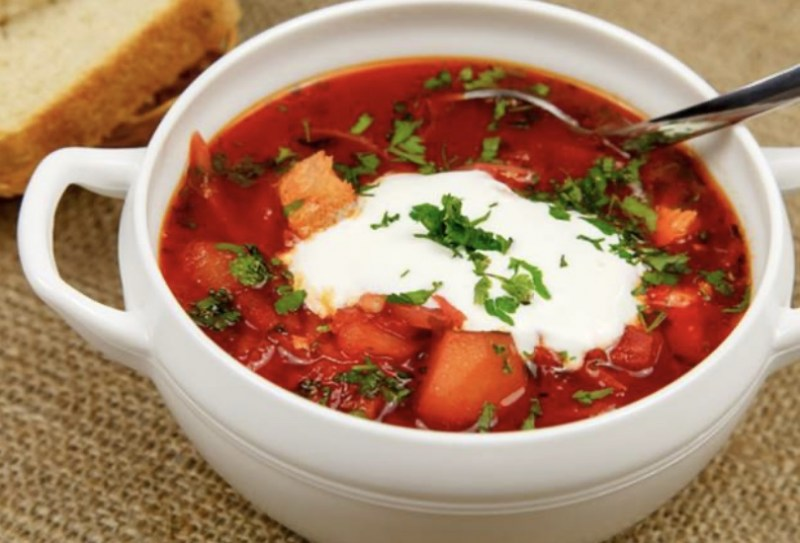
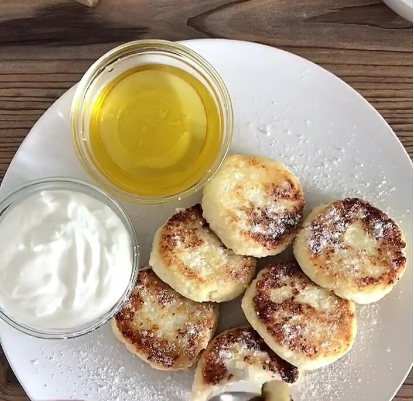

Вкусный блог!
Русская кухня
Русская кухня известна своим разнообразием и обильными порциями, с использованием местных продуктов.
Мы предоставляем вам три наших любимых рецепта!
| Изображение: | Название блюда: | Рецепт: |
|  | Борщ | Ингредиенты:
свекла — 300 г;
капуста — 150 г;
картофель — 2 шт.;
морковь — 1 шт.;
лук — 1 шт.;
помидоры — 2 шт.;
бульон — 1,5 л;
масло растительное — 2 ст. л.;
укроп, соль и перец по вкусу.
Приготовление: Очистить и нарезать свеклу, морковь, лук и картофель. Обжарить лук с морковкой на растительном масле до легкого золотистого цвета. Добавить свеклу и тушить 10 минут, затем добавить помидоры и немного воды, проварить. В бульон добавить картошку и капусту, варить до готовности. Добавить зажарку из свеклы и по вкусу укроп, соль и перец. Приятного аппетита! |
 |
Пельмени | Ингредиенты:
мука — 500 г;
вода — 200 мл;
яйца — 1 шт.;
мясо (свинина и говядина) — 400 г;
лук — 1 шт.;
соль и перец по вкусу.
Приготовление: Замесить тесто из муки, воды и яйца, оставить на 30 минут. Мясо и лук прокрутить через мясорубку, добавить соль и перец. Раскатать тесто, вырезать кружки, начинить их мясной начинкой и защипнуть края. Варить в подсоленной воде 10-15 минут до готовности. Приятного аппетита! |
|  | Сырники | Ингредиенты:
творог — 500 г;
яйцо — 1 шт.;
сахар — 2 ст. л.;
мука — 5 ст. л.;
разрыхлитель — 1 ч. л.;
растительное масло — для жарки.
Приготовление: Творог отжать, смешать с яйцом, сахаром, мукой и разрыхлителем. Сформировать круглые лепешки. Обжарить на сковороде с растительным маслом до золотистой корочки с обеих сторон. Подавать горячими со сметаной или медом или что-нибудь другое на ваше усмотрение. Приятного аппетита! |